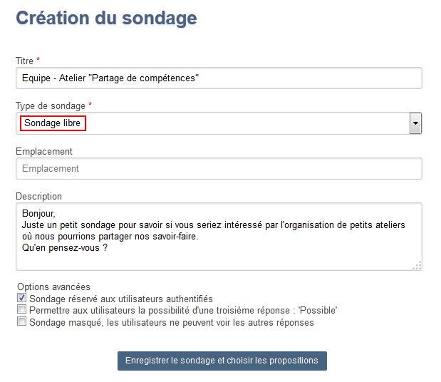
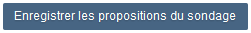

Sondage libre
Le sondage libre est un petit questionnaire qui permet de recueillir l'opinion des personnes invitées à répondre :

Préparer un questionnaire
Pour créer ce type de sondage, l'organisateur dispose d'un formulaire permettant la préparation du questionnaire.
Dans cet écran, l'organisateur pourra :
- saisir les différentes propositions de l'enquête [1]
- en ajouter si nécessaire [2]
- ou en supprimer [3]
Une fois la liste des propositions finalisée, enregistrer en cliquant sur le bouton : 
Ce que verront les participants
A propos...Affaire suivie par Patrick LANGLET - SG/SPSSI/PSI2 - Chargé de mission Messagerie et outils connexes